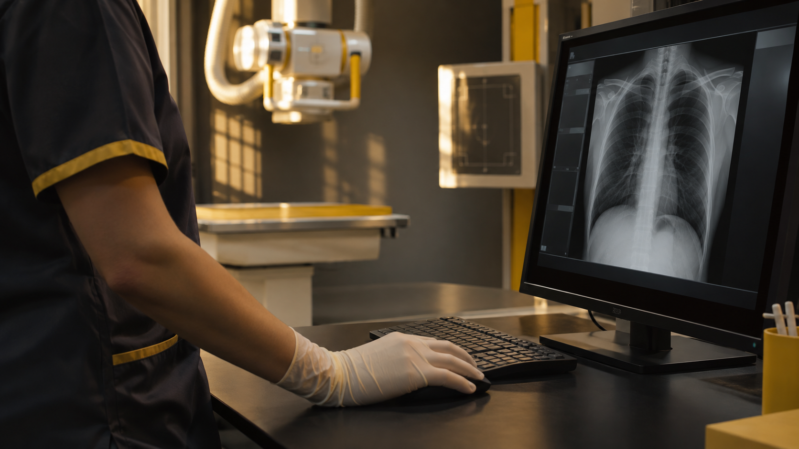
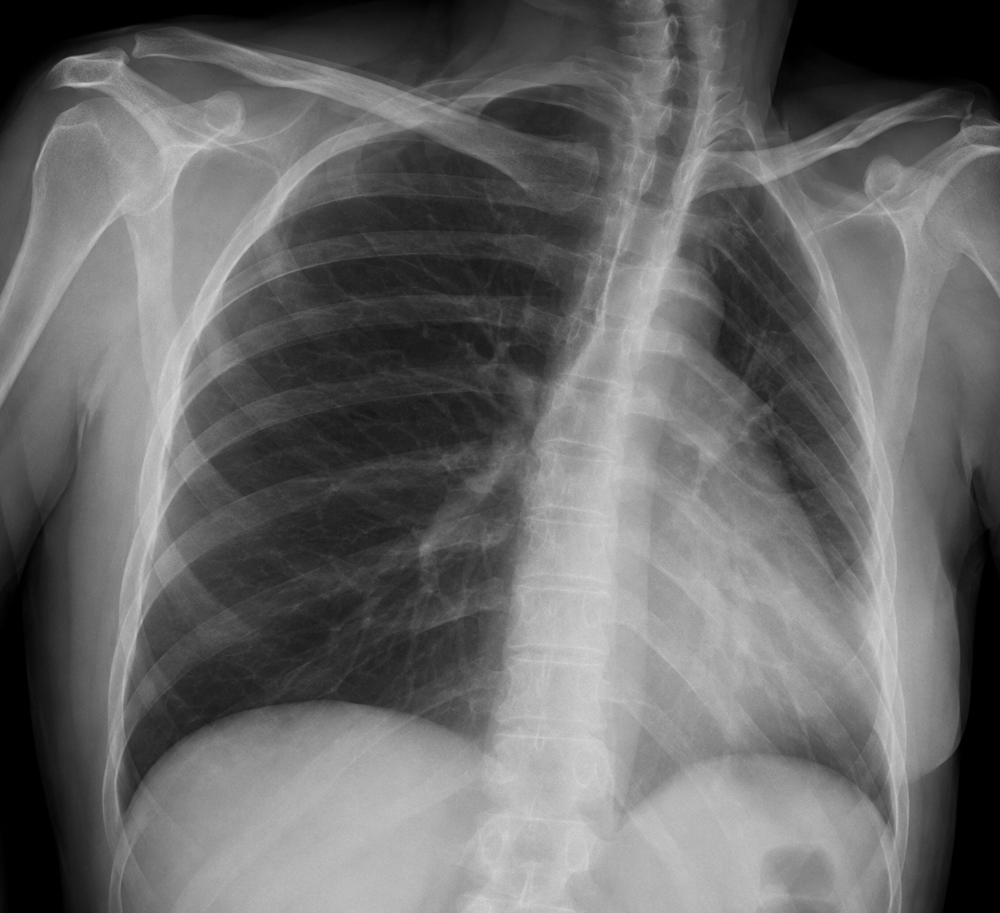
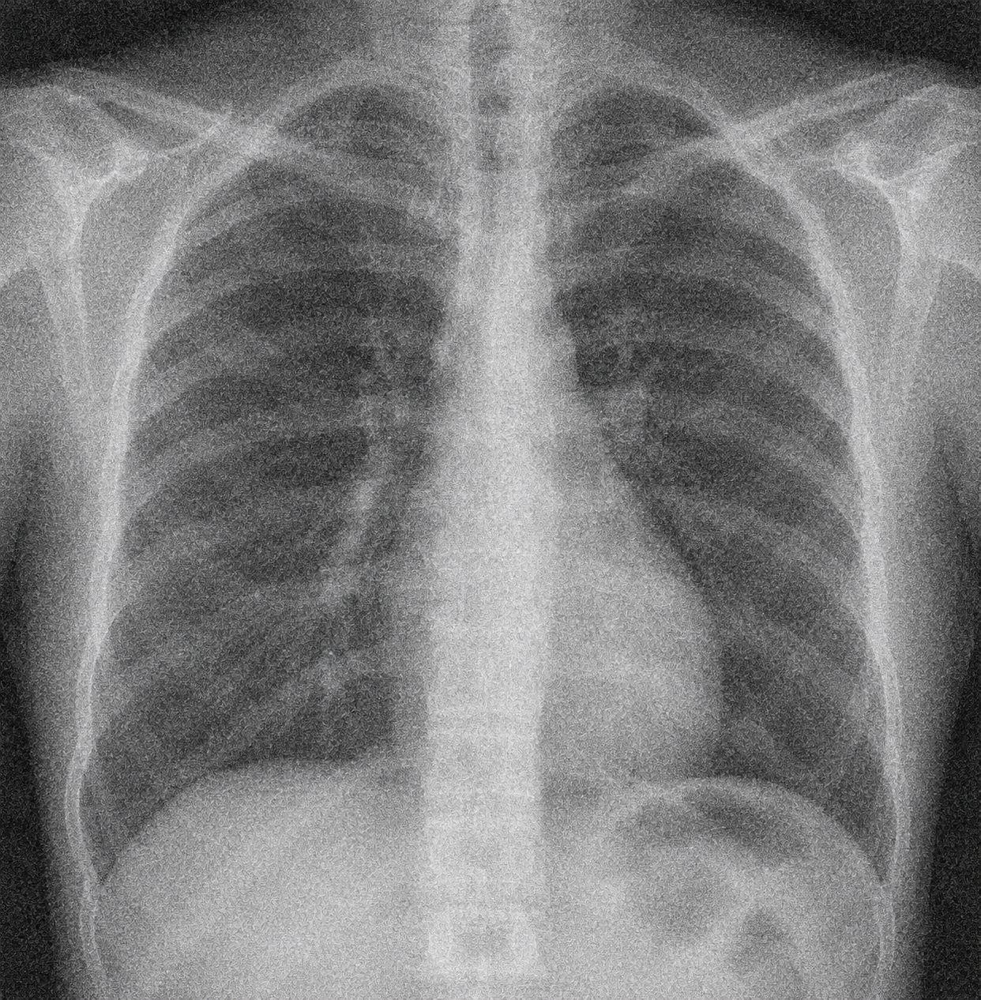
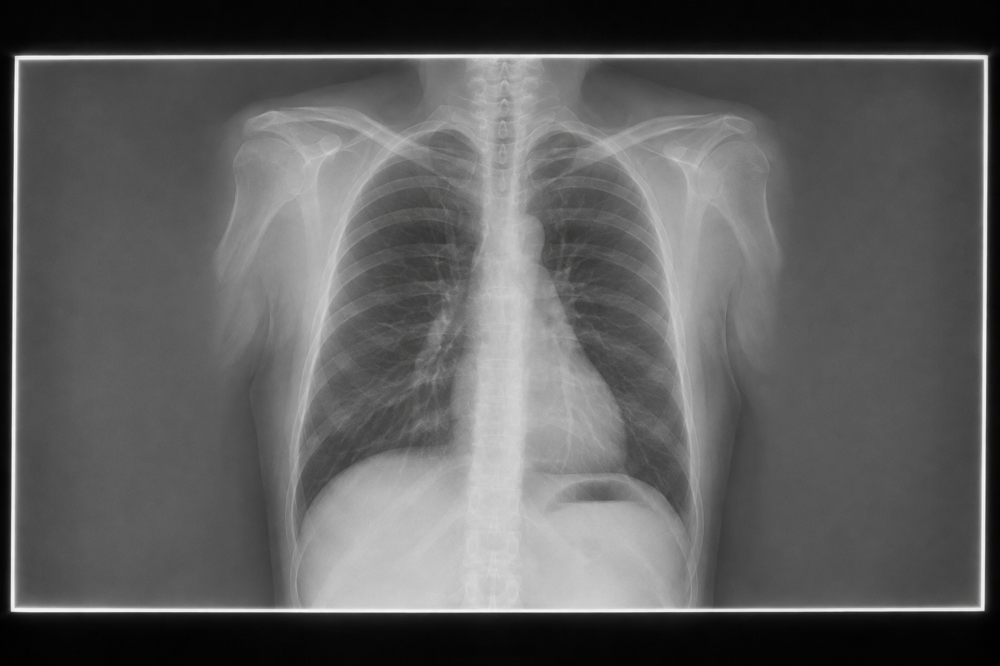
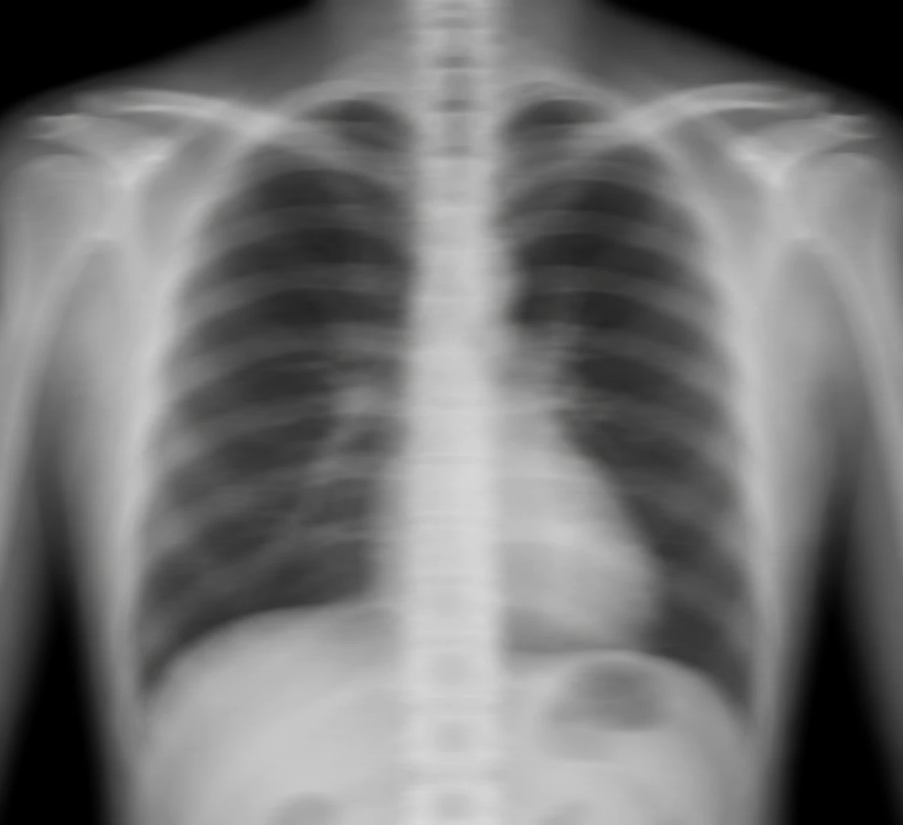
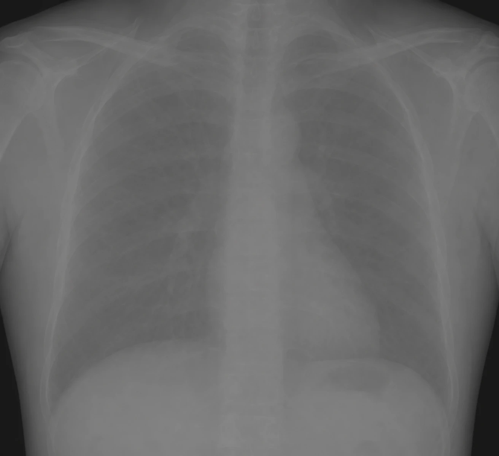

Anatomía
Inclusión y visualización de la anatomía de interés según el propósito del estudio.
Aprende a reconocer la relación entre el posicionamiento y la calidad de la imagen con casos simulados, práctica guiada y decisiones argumentadas.

Registra tus datos para personalizar el informe final. Se guardan en este navegador y se incluyen en el PDF; la página no los envía automáticamente.
De la observación a la toma de decisiones, cada paso te prepara para construir una evidencia razonada.
Analiza imágenes radiográficas simuladas para identificar problemas de posicionamiento y calidad técnica, y justifica una acción de mejora segura. La lista de cotejo orienta la revisión; la rúbrica del informe final valora el logro, con una meta de al menos 80/100 puntos.
Una secuencia para separar lo que observas de lo que todavía necesitas comprobar.
Inclusión y visualización de la anatomía de interés según el propósito del estudio.
Simetría, rotación, angulación y centrado; describe los hallazgos antes de inferir su causa.
Contraste, resolución espacial, ruido, nitidez y presencia de artefactos.
Verifica el protocolo y la colimación previa. El recorte posterior no sustituye la colimación.
Las imágenes son simulaciones generadas con IA para fines didácticos; pueden contener imprecisiones anatómicas. Usa las descripciones del caso para responder. No son estudios clínicos y no sustituyen protocolos institucionales, supervisión ni criterio profesional autorizado.
Completa las actividades en orden. Puedes modificar tus respuestas antes de descargar el informe.
Propósito: activar conocimientos previos del RA-U2. Evidencia: respuestas y puntuación. Retroalimentación inmediata.
Propósito: aplicar A–P–T–S a cinco casos. Evidencia: cinco clasificaciones. Retroalimentación tras cada elección.

En un esquema frontal, las estructuras laterales se observan asimétricas. ¿Qué revisarías primero?

La señal útil se ve interferida por textura granular. ¿Qué propiedad se observa?

El campo se extiende mucho más allá del área de interés. ¿Qué revisarías?

Durante la exposición hubo movimiento y los contornos aparecen borrosos. ¿Qué problema describe mejor el hallazgo?

El enunciado indica que regiones distintas presentan tonos muy semejantes, dificultando diferenciarlas. ¿Qué propiedad conviene revisar?
Propósito: integrar calidad y seguridad. Evidencia: decisión escrita. La nota automática se calcula con 5 preguntas de diagnóstico (25 puntos), 5 casos (35 puntos) y 4 respuestas de decisión y razonamiento (40 puntos); el texto escrito es una reflexión sin puntos automáticos.
Se incluye la anatomía requerida, pero hay leve rotación. El esquema no permite decidir solo por apariencia si se necesita otra adquisición. ¿Qué harías?
La evaluación del aprendizaje culmina con una evidencia que integra observación, razonamiento y seguridad.
Compara dos casos simulados mediante A–P–T–S. Describe hallazgos observables, relaciona posición y calidad, propone una acción segura y explica qué información adicional verificarías.
Formato: 600–800 palabras o audio de 4–6 minutos con transcripción. Envía el informe comparativo por correo a la docente como documento adjunto; puedes añadir también el PDF de resultados de la práctica.
Revisión: lista de cotejo formativa; rúbrica sumativa con meta de 80/100 puntos. La docente responde por correo con dos fortalezas y una prioridad de mejora. Tras recibir la retroalimentación, podrás reenviar una versión mejorada en 72 horas.
La nota automática de la práctica se calcula por separado: diagnóstico 25 puntos, casos 35 puntos y decisión con razonamiento 40 puntos. El informe comparativo se valora con los siguientes criterios y niveles; la meta de la unidad es 80/100.
Estos niveles dependen de los aciertos de las actividades. La meta global es 80/100; el informe comparativo se evalúa por separado.
| Criterio | Excelente Sin errores | Logrado Un error | En proceso Dos errores | Inicial Más de dos errores |
|---|---|---|---|---|
| Diagnóstico 25 puntos | 5/5 · 25 puntos | 4/5 · 20 puntos | 3/5 · 15 puntos | 0–2/5 · 0–10 puntos |
| Casos 35 puntos | 5/5 · 35 puntos | 4/5 · 28 puntos | 3/5 · 21 puntos | 0–2/5 · 0–14 puntos |
| Decisión y razonamiento 40 puntos | 4/4 · 40 puntos | 3/4 · 30 puntos | 2/4 · 20 puntos | 0–1/4 · 0–10 puntos |
Cada respuesta de diagnóstico vale 5 puntos, cada caso 7 y cada respuesta de decisión y razonamiento 10. La reflexión escrita no suma puntos automáticamente.
Consulta los criterios antes de entregar. La docente valorará cada criterio y enviará retroalimentación por correo.
| Criterio | Excelente | Logrado | En proceso | Inicial |
|---|---|---|---|---|
| Hallazgos 25 puntos | 22–25: precisos en ambos casos. | 18–21: adecuados. | 13–17: generales. | 0–12: no sustentados. |
| Posición y calidad 25 puntos | 22–25: explica relaciones y prioridades. | 18–21: relación coherente. | 13–17: relación parcial. | 0–12: confunde criterios. |
| Decisión y seguridad 30 puntos | 27–30: integra protocolo, optimización y alternativas. | 22–26: segura y coherente. | 16–21: justificación débil. | 0–15: automática o insegura. |
| Comunicación 20 puntos | 18–20: clara, citada y transfiere. | 14–17: clara y organizada. | 10–13: poco organizada. | 0–9: difícil de seguir. |
En pantallas pequeñas, desliza la tabla horizontalmente para consultar todos los niveles.
Revisa tu información y las respuestas antes de descargar. Podrás volver a cualquier actividad para corregirlas.
El botón abre Gmail con un mensaje preparado para la docente. Adjunta el PDF de resultados y, cuando esté listo, tu informe comparativo. Revisa el mensaje y pulsa Enviar: la página no envía correos automáticamente.